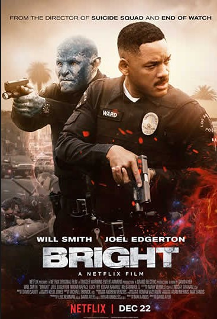
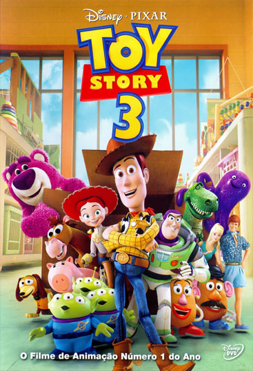
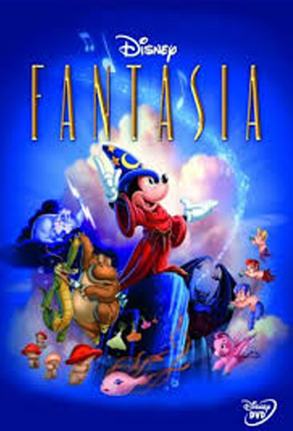
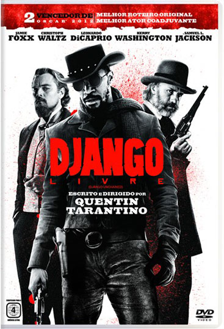
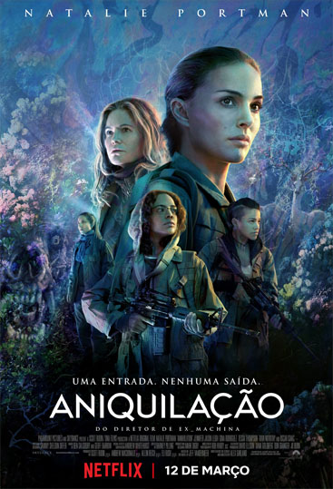
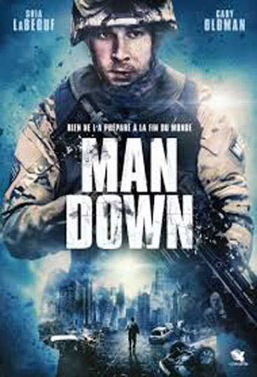
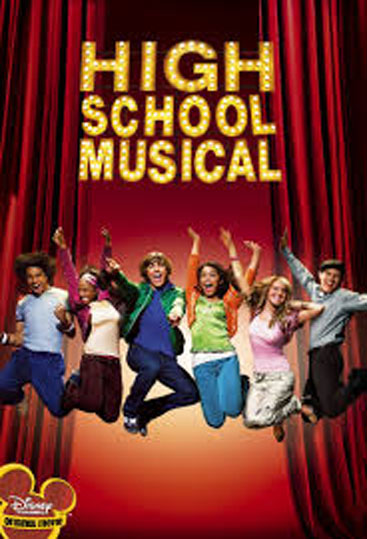

GÉNEROS DE FILMES
⌠Ação⌡
Um filme de ação ou acção é um gênero de filme que geralmente envolve uma história de protagonistas do bem contra antagonistas do mal, que resolvem suas disputas com o uso de força física. Os filmes de ação têm como histórias o crime, os westerns e a guerra entre outros. Geralmente são superproduções, com high concept (conceito alto), abusando de efeitos especiais. A maioria dos filmes de ficção científica e policiais também são filmes de ação.

⌠Animação⌡
Animação refere-se ao processo segundo o qual cada fotograma de um filme é produzido individualmente, podendo ser gerado quer por computação gráfica quer fotografando uma imagem desenhada quer repetidamente fazendo-se pequenas mudanças a um modelo fotografando o resultado. Quando os fotogramas são ligados entre si e o filme resultante é visto a uma velocidade de 16 ou mais imagens por segundo, há uma ilusão de movimento contínuo (por causa da persistência de visão). A construção de um filme torna-se assim um trabalho muito intensivo e por vezes entediante. O desenvolvimento da animação digital aumentou muito a velocidade do processo, eliminando tarefas mecânicas e repetitivas.

⌠Aventura⌡
O filme de aventura é um gênero cinematográfico que reflete um mundo heróico de combates e aventuras. Foi inventado na Itália, como meio de exaltação de seu passado histórico e, posteriormente, foi usada pela Rússia, para exaltar a Revolução Russa.
⌠Comédia⌡
A comédia é o uso de humor nas artes cênicas. Também pode significar um espetáculo que recorre intensivamente ao humor. De forma geral, “comédia” é o que é engraçado, que faz rir.
⌠Documentário⌡
Documentário é um gênero cinematográfico que se caracteriza pelo compromisso com a exploração da realidade. Mas dessa afirmação não se deve deduzir que ele represente a realidade – tal como ela é -. O documentário, assim como o cinema de ficção, é uma representação parcial e subjetiva da realidade.
⌠Fantasia⌡
Fantasia é um gênero de arte que usa a magia e outras formas sobrenaturais como o elemento principal/primário de uma história, Este gênero é geralmente distinguido de Ficção Científica e horror pelo aspecto geral, atmosfera e pelos temas de cada autor individual, embora haja uma grande sobreposição entre os três (conhecidos no seu conjunto por Ficção especulativa). De modo geral, o termo fantasia cobre trabalhos de escritores, artistas e músicos, desde mitos e lendas até obras mais recentes, conhecidas por uma vasta audiência.

⌠Faroeste – Western⌡
O chamado cinema western, também popularizado sob os termos “filmes de cowboys” ou “filmes de faroeste”, compõe um género clássico do cinema norte-americano (ainda que outros países tenham produzido westerns, como aconteceu em Itália, com os seus western spaghetti). O termo inglês western significa “ocidental” e refere-se à fronteira do Oeste norte-americano durante a colonização. Esta região era também chamada de far west – e é daqui que provém o termo usado no Brasil, faroeste (também se usou o termo juvenil bang-bang, na promoção das antigas matinês e de quadrinhos). Os westerns podem ser quaisquer formas de arte que representem, de forma romanceada, acontecimentos desta época e região.

⌠Ficção científica⌡
Ficção científica é uma forma de ficção desenvolvida no século XIX, que lida principalmente com o impacto da ciência, tanto verdadeira como imaginada, sobre a sociedade ou os indivíduos. O termo é usado, de forma mais geral, para definir qualquer fantasia literária que inclua o fator ciência como componente essencial, e num sentido ainda mais geral, para referenciar qualquer tipo de fantasia literária.

⌠Guerra⌡
Como o próprio nome já diz, este gênero relata Guerras, dependendo do filme, a história é relatada totalmente sem cortes, ou seja, mostra todas as cenas violentas e fortes, que são normais em uma guerra e já outros visam contar somente a história e não foca a guerra em si.

⌠Musicais⌡
Musicais é um gênero de filme, no qual a narrativa se apóia sobre uma seqüência de músicas coreografadas, utilizando música, canções e coreografia como forma de narrativa, predominante ou exclusivamente.
